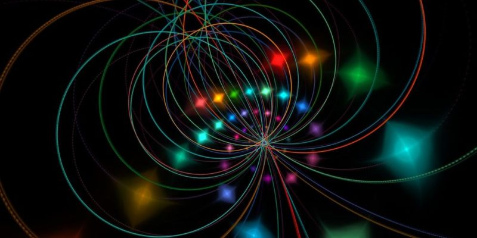

¿Que es la teoria de cuerdas?
De acuerdo con estas teorías, un electrón no sería un "punto" sin estructura interna y de dimensión cero, sino una cuerda minúscula en forma de lazo vibrando en un espacio-tiempo de más de cuatro dimensiones; de hecho, el planteamiento matemático de esta teoría no funciona a menos que el universo tenga once dimensiones. Mientras que un punto simplemente se movería por el espacio, una cuerda podría hacer algo más: vibrar de diferentes maneras. Si vibrase de cierto modo, veríamos un electrón; pero si lo hiciese de otro, veríamos un fotón, un quark o cualquier otra partícula del modelo estándar dependiendo de la forma concreta en que estuviese vibrando. Estas teorías, ampliada con otras como la de las supercuerdas o la Teoría M, pretende alejarse de la concepción del punto-partícula.

La inobservabilidad de las dimensiones adicionales está relacionada al hecho de que estas estarían compactadas, y solo serían relevantes a escalas pequeñas comparables con la longitud de Planck. Igualmente, con la precisión de medida convencional las cuerdas cerradas con una longitud similar a la longitud de Planck se asemejarían a partículas puntuales.